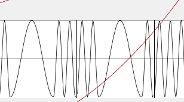
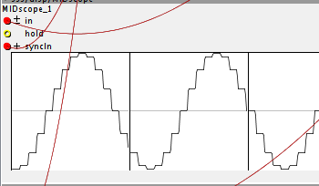
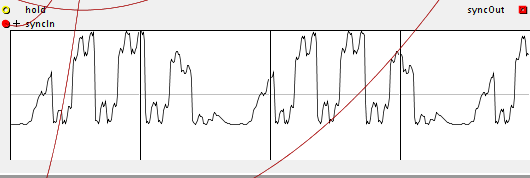
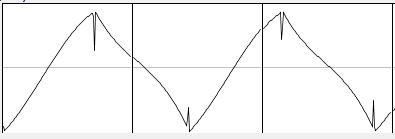

tiar/PIW/
I will add in this folder a series of objects based on pre integration anti aliasing that will be quite versatile.
see the help patches to get an idea: menu: Help -> Library -> Community -> tiar -> PIW
tiar/PIW/gen
is a wave generator, at init it generates a wave based on the function formula you put in. It generates and pre processes the wavetable. It does not produce audio signals. It must be used with PIW/osc
function:
two variables are available
- i is an integer from 0 to 255, it can be used to generate "8bit" tables, try stuff like i^(i>>1)
- x a float varies from 0 to 1
- available functions: saw(x), tri(x), sin1(x)
The wave is automatically DC removed and normalised so that expressions like ((i * 5)&0xAA) * (1-0.25 * (1-sin1(x)) * (1-sin1(x))) can work without bothering to much about amplitudes and offsets.
examples for functions you can type in:
pure sine wave
sin1(x)
multiple sine waves
sin1(x)+sin1(3*x)+sin1(5*x)
square wave
x > 0.5f ? 1 : -1
rectangle wave 33 %
x > 0.333f ? 1 : -1
-1 +1 triangle wave
tri(x)
triangle 33% cyclic ratio
tri(x, 0.333f)
smooth triangle 33%
sat(1.5f * tri(x, 0.333f))
sine switch
x < 0.5f ? sin1(2*x) : sin1(8*x)
Fractal waveform
i^(i>>1)
Another fractal waveform
i^0xAA
steppy sine à l'ancienne
sin1( ((int)(x*16))/16.0f )
Here is the "sine switch"

The "steppy sine"

and ((i * 5)&0xAA) * (1-0.25 * (1-sin1(x)) * (1-sin1(x)))

One more waveform (copy paste this into the "function" attribute of the PIW/gen)
tri(x) > 0.99f ?
0.1f
: tri(x) < -0.99f ?
-0.1f
: x > 0.5f ?
3 * tri(x) - 2.6f * sat(0.6f * tri(x) - 0.05f)
: 1.1f * sat(0.7f * tri(x) + 0.1f)
This is an unperfect "triangle waveform" as it can come out from an old and almost defective analog synth (commutation spikes and slight asymmetry).

tiar/PIW/osc
is a osc with anti aliased phase modulation. It connects to a PIW/gen and is aliasing limited thanks to pre integration.
This osc is capable of phase modulation with complex wavetables (as carrier and modulator) with little digital artifacts. It is phase modulation à la sinclavier as opposed to DX.
see the help patches to get an idea: menu: Help -> Library -> Community -> tiar -> PIW
[edit] moved to tiar/PIW


{kind=link}
{kind=link}
{kind=link}
{kind=link}